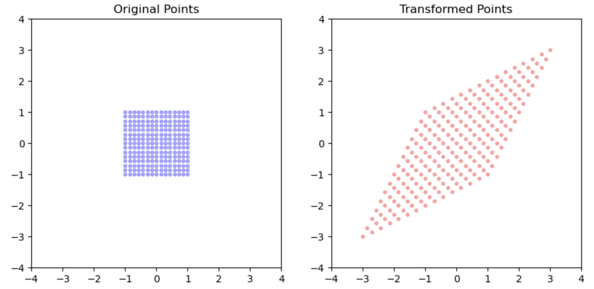

Spectral decomposition
Spectral decomsition is a method to factorize a square matrix (i.e., matrix with same nuber of rows as columns) into simpler or special matrices which facilitates efficient computations of matrices.
Before delving into the details, lets have an intuitive understanding on what spectral decomposition actually does.
Consider a symmetric matrix \(A\):
\[ A = \begin{bmatrix} 2 & 1 \\ 1 & 2 \end{bmatrix} \]
From our previous discussion on matrices, we know that a matrix can be understood as a geometric object that applies various transformations. In the case of \(A\), the transformation resembles stretching the points diagonally.

Breaking Down the Transformations
This transformation can be divided into three simpler operations: Rotation, Scaling, and Rotation again. We can visualize these transformations as layers that combine to achieve the final result.

Figure 2 illustrates the mechanism of spectral decomposition, demonstrating that a complex transformation (such as A) can be transformed into three simpler ones: Rotation, Scaling, Rotation.
The Role of Special Matrices
From our previous chapter on special matrices, we learned that: * Orthogonal matrices represent rotation transformations. * Diagonal matrices correspond to scaling transformations.
From the previous chapter on special matrices, we know that orthogonal matrices are rotation transformations and diagonal matrices are basically scaling transformations.
Mathematical Notation of Spectral Decomposition
Now, let’s look at the mathematical notation for spectral decomposition. With our understanding of how the transformation of A can be achieved through simpler transformations, this notation should make more sense:
For a symmetric matrix \(A\), the spectral decomposition is \(A=Q\lambda Q^T\)
where: * \(Q\) is an orthogonal matrix (\(Q^TQ = I\)) whose columns are the orthonormal eigenvectors of \(A\)
- \(\Lambda = \text{diag}(\lambda_1, \lambda_2, \ldots, \lambda_n)\) contains the corresponding real eigenvalues
Why Decompose a Matrix?
You might be wondering about the purpose of this decomposition. The simple answer is that it converts a complex transformation into a series of simpler transformations, effectively scaling along orthogonal directions. If we need to perform operations on \(A\), these operations become much easier.
For example, if we need to compute \(A^2\) which is \(AA\) then it
\[\begin{equation} AA = Q\lambda Q^T Q\lambda Q^T \end{equation}\]
\[\begin{equation} = Q\lambda I \lambda Q^T = Q\lambda \lambda Q^T = Q\lambda^2 Q^T \end{equation}\]
No matter what power of A you need to compute, you just apply that power on each element of \(\lambda\).
\[\begin{equation} A^p = Q\lambda^p Q^T \end{equation}\]
Limitations of Spectral Decomposition
It’s important to note that spectral decomposition, while powerful, is limited to symmetric matrices. In real-world applications, however, many matrices are not symmetric.
Is there a way to achieve a similar decomposition for non-symmetric matrices?
Answer: Yes! The answer lies in Singular Value Decomposition (SVD). This technique generalizes the concept and provides similar benefits for a broader class of matrices.
Conclusion
Spectral decomposition is a fundamental tool that transforms complex matrix operations into simpler, more manageable components. By breaking down a symmetric matrix into its essential parts—rotation and scaling—we not only facilitate easier computations but also gain profound insights into the properties and behaviors of the matrix.